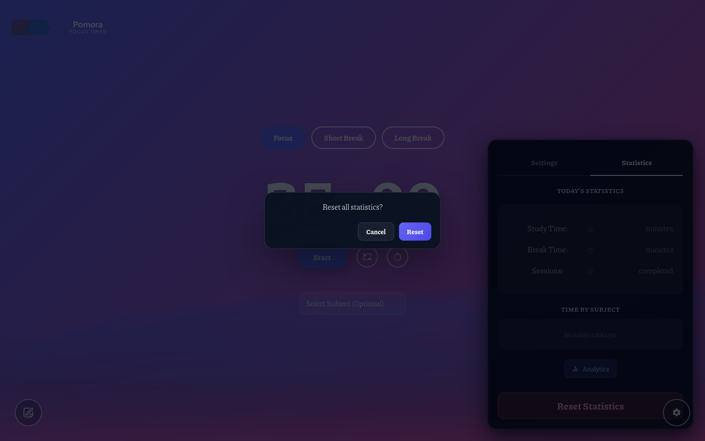
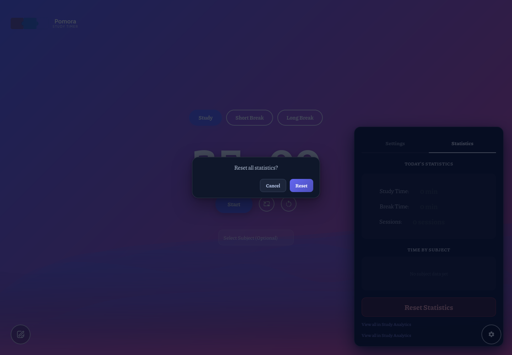
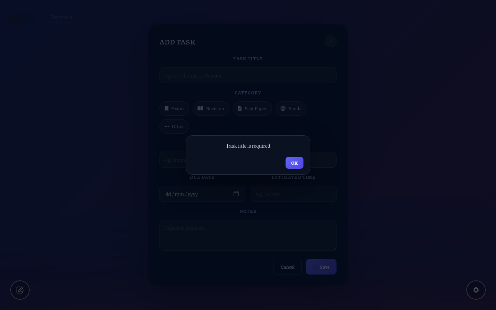
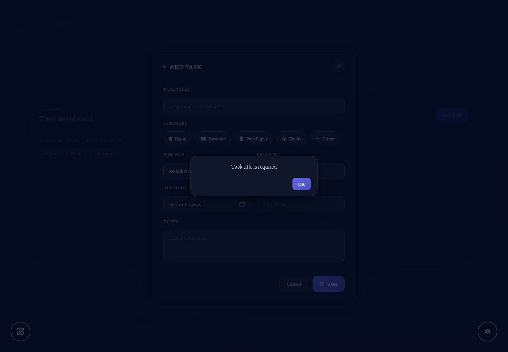
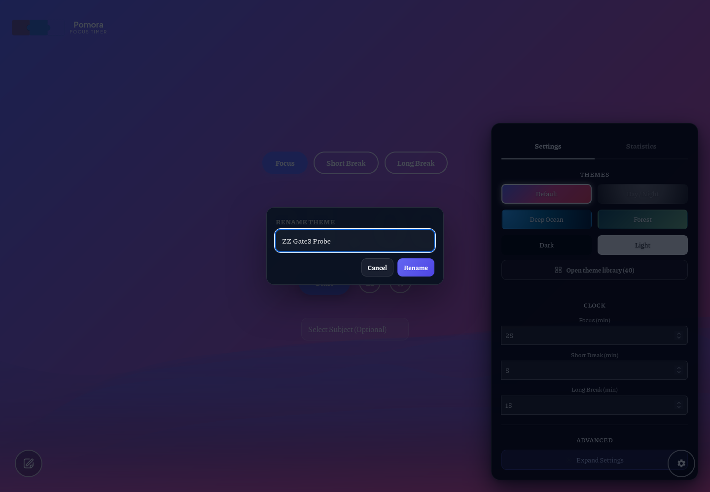
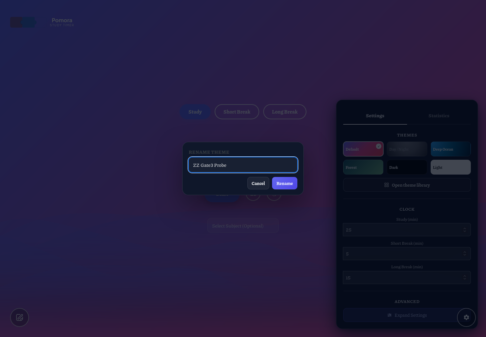
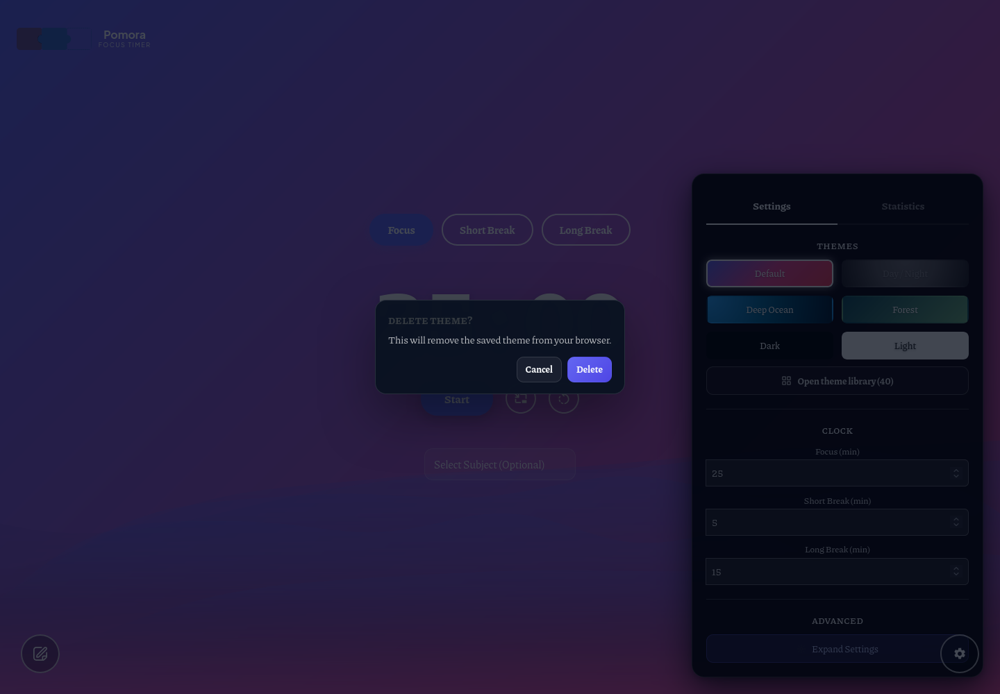
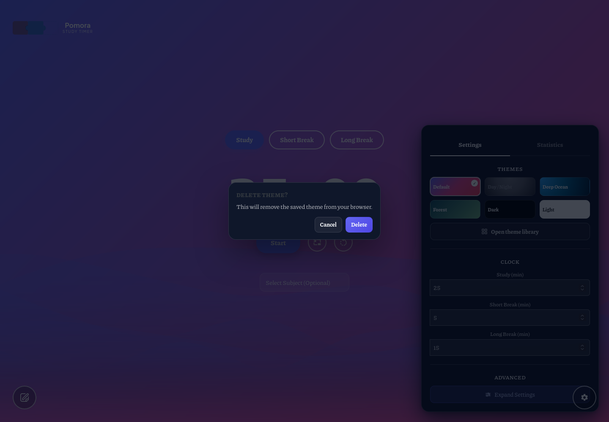
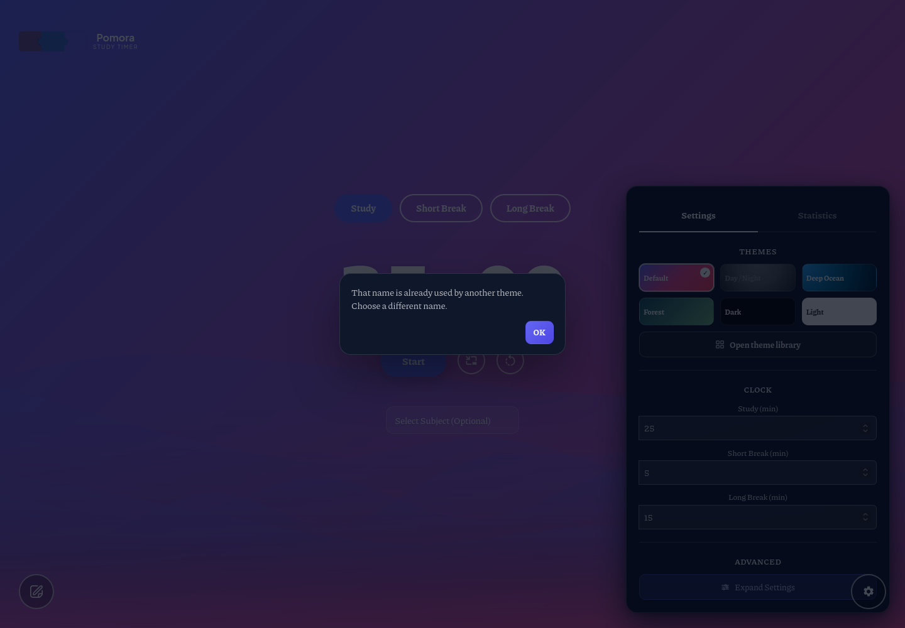

Brought to the approved planner-v3 standard: accent-bounded cards with indigo glow, red danger variant on destructive confirms (task delete + both stats resets — the sanctioned JS-adjacent change from §10.4), tinted secondary Cancel, alto-blue register throughout, and the whole surface theme-adaptive via --s23-* variables that re-map to --th-accent under custom themes. Structure, close chains, stacking order and all JS hooks unchanged.


The Reset button renders red (.confirm-btn-danger) — destructive actions read as destructive. Battery asserts the class, red paint + glow, and the primary's full structure (radius/padding/transition).


Non-destructive confirmations keep the indigo primary — danger is reserved for delete/reset.





No separate before shots — same te-confirm shell as the pair above.